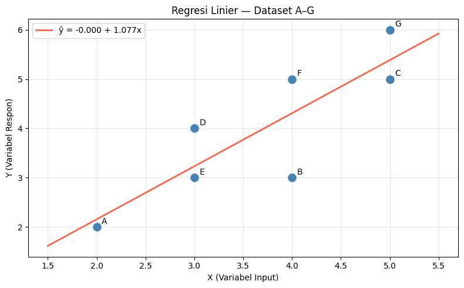

📊 Regresi Linier (Linear Regression)#
1. Apa itu Regresi Linier?#
Regresi Linier adalah metode supervised learning untuk memprediksi nilai kontinu (bukan kategori). Dalam peta machine learning, posisinya adalah:
Kontinu |
Kategorikal |
|
|---|---|---|
Supervised |
Regression ✅ ← kita di sini |
Classification |
Unsupervised |
Dimension Reduction |
Clustering |
Mengapa Regresi Linier penting dipelajari?
Widely used — banyak digunakan di industri dan akademik
Runs fast — komputasi sangat cepat
Easy to use — tidak perlu banyak hyperparameter tuning
Highly interpretable — koefisien mudah dijelaskan secara intuitif
Basis for many methods — fondasi Ridge, Lasso, Logistic Regression, dsb.
2. Model Regresi Linier Sederhana#
Persamaan dasar regresi linier sederhana (satu prediktor):
Simbol |
Nama |
Keterangan |
|---|---|---|
\(y\) |
Response variable |
Nilai yang ingin diprediksi (target) |
\(x\) |
Input variable |
Variabel prediktor / fitur |
\(b_0\) |
Intercept |
Titik potong garis dengan sumbu-\(y\) |
\(b_1\) |
Regression coefficient |
Kemiringan garis \(\left(\dfrac{\Delta y}{\Delta x}\right)\) |
\(\varepsilon\) |
Residual |
Error — selisih nilai prediksi dengan data asli |
3. Model Regresi Linier Berganda (Multiple)#
Diperluas untuk beberapa variabel input sekaligus:
Dalam notasi matriks yang lebih ringkas:
di mana \(X \in \mathbb{R}^{n \times (p+1)}\) adalah matriks fitur yang sudah ditambah kolom 1 (bias).
4. Estimasi Koefisien — Ordinary Least Squares (OLS)#
Konsep: Meminimalkan Sum of Squared Residuals#
Kita mencari garis \(\hat{y}\) yang meminimalkan jumlah kuadrat error:
Note
Mengapa dikuadratkan? Agar nilai positif dan negatif tidak saling menghilangkan, dan memberikan penalti lebih besar untuk error yang besar.
Solusi Analitik OLS#
Melalui kalkulus (meminimalkan \(SS_{res}\) terhadap \(\mathbf{b}\)), diperoleh formula tertutup:
Keterangan:
Term |
Peran |
|---|---|
\(X\) |
Matriks fitur (kolom pertama = 1 untuk intercept) |
\(Y\) |
Vektor target/response |
\(X^T\) |
Transpose matriks \(X\) (baris ↔ kolom) |
\((X^TX)^{-1}\) |
Invers matriks — hanya bisa dihitung jika \(X^TX\) invertible |
Lihat persamaan (1) — ini adalah formula utama yang kita implementasikan di Python maupun GeoGebra.
5. Contoh Perhitungan Manual#
Dataset#
Titik |
\(X\) (Variabel Input) |
\(Y\) (Variabel Respon) |
|---|---|---|
A |
2 |
2 |
B |
4 |
3 |
C |
5 |
5 |
D |
3 |
4 |
E |
3 |
3 |
F |
4 |
5 |
G |
5 |
6 |
Statistik dasar:
Langkah 1 — Susun Matriks \(X\) dan Vektor \(Y\)#
Tambahkan kolom \(1\) di paling kiri sebagai placeholder untuk intercept \(b_0\):
Langkah 2 — Hitung \(X^T X\)#
Langkah 3 — Hitung \((X^T X)^{-1}\)#
Warning
Hanya matriks persegi yang bisa diinvers. Karena \(X^TX\) selalu berukuran \((p+1)\times(p+1)\), maka selalu bisa diinvers (selama tidak ada multicollinearity sempurna).
Langkah 4 — Hitung \(X^T Y\)#
Langkah 5 — Hitung \(\hat{\mathbf{b}}\)#
Hasil Akhir
Artinya: setiap kenaikan 1 unit \(x\), nilai \(y\) naik rata-rata ±1.077 unit. Intercept \(b_0 = 0\) berarti garis melewati titik asal.
Langkah 6 — Verifikasi dengan Rumus Sederhana#
Untuk regresi sederhana (1 prediktor), ada rumus alternatif yang lebih ringkas:
Langkah 7 — Evaluasi Model (\(R^2\))#
Titik |
\(x\) |
\(y\) |
\(\hat{y} = 1.077x\) |
Residual \((y - \hat{y})\) |
|---|---|---|---|---|
A |
2 |
2 |
2.154 |
−0.154 |
B |
4 |
3 |
4.308 |
−1.308 |
C |
5 |
5 |
5.385 |
−0.385 |
D |
3 |
4 |
3.231 |
+0.769 |
E |
3 |
3 |
3.231 |
−0.231 |
F |
4 |
5 |
4.308 |
+0.692 |
G |
5 |
6 |
5.385 |
+0.615 |
Model menjelaskan sekitar 71.8% variasi data.
6. Variabel Kategorikal — Dummy Variables#
Untuk variabel kategorikal dengan \(k\) level, kita buat \(k-1\) variabel binary (dummy).
Mengapa \(k-1\) dan bukan \(k\)?
Karena \(k-1\) dummy sudah cukup merepresentasikan semua kemungkinan. Menggunakan \(k\) dummy menyebabkan multicollinearity — kondisi di mana dua atau lebih prediktor berkorelasi sempurna, membuat matriks \(X^TX\) tidak bisa diinvers.
Contoh: variabel Major dengan \(k=4\) level.
Major |
Engineering |
Business |
Literature |
(ref.) |
|---|---|---|---|---|
Computer Science |
0 |
0 |
0 |
← referensi |
Engineering |
1 |
0 |
0 |
|
Business |
0 |
1 |
0 |
|
Literature |
0 |
0 |
1 |
Tipe data kategorikal:
Nominal (tidak berurutan) → gunakan dummy variables seperti di atas
Ordinal (berurutan, mis. skala Likert) → bisa dikodekan sebagai integer
1, 2, 3, 4, 5
7. Implementasi Python#
7.1 Menggunakan Scikit-learn#
import numpy as np
import matplotlib.pyplot as plt
from sklearn.linear_model import LinearRegression
# ── Dataset (7 titik A–G) ──────────────────────────────────
X = np.array([2, 4, 5, 3, 3, 4, 5], dtype=float).reshape(-1, 1)
Y = np.array([2, 3, 5, 4, 3, 5, 6], dtype=float)
labels = list("ABCDEFG")
# ── Latih model ────────────────────────────────────────────
model = LinearRegression()
model.fit(X, Y)
print(f"Intercept b₀ : {model.intercept_:.4f}")
print(f"Koefisien b₁ : {model.coef_[0]:.4f}")
# ── Prediksi & visualisasi ─────────────────────────────────
X_line = np.linspace(1.5, 5.5, 200).reshape(-1, 1)
Y_line = model.predict(X_line)
plt.figure(figsize=(8, 5))
plt.scatter(X, Y, color="steelblue", s=90, zorder=5)
for i, lbl in enumerate(labels):
plt.annotate(lbl, (X[i, 0], Y[i]), textcoords="offset points",
xytext=(6, 4), fontsize=10)
plt.plot(X_line, Y_line, color="tomato", lw=2,
label=f"ŷ = {model.intercept_:.3f} + {model.coef_[0]:.3f}x")
plt.xlabel("X (Variabel Input)")
plt.ylabel("Y (Variabel Respon)")
plt.title("Regresi Linier — Dataset A–G")
plt.legend()
plt.grid(alpha=0.3)
plt.tight_layout()
plt.show()
Intercept b₀ : -0.0000
Koefisien b₁ : 1.0769

7.2 Perhitungan OLS Analitik (dari Nol)#
Implementasi langsung formula (1) tanpa library ML:
import numpy as np
# ── Data ───────────────────────────────────────────────────
X_raw = np.array([2, 4, 5, 3, 3, 4, 5], dtype=float)
Y = np.array([2, 3, 5, 4, 3, 5, 6], dtype=float)
labels = list("ABCDEFG")
# ── Susun matriks X (tambah kolom 1 untuk intercept) ───────
X = np.column_stack([np.ones(len(X_raw)), X_raw])
print("Matriks X:\n", X)
# ── Hitung komponen OLS ────────────────────────────────────
XTX = X.T @ X # [[7, 26], [26, 104]]
XTX_inv = np.linalg.inv(XTX)
XTY = X.T @ Y # [28, 112]
# ── Koefisien b ────────────────────────────────────────────
b = XTX_inv @ XTY
print(f"\nb₀ (intercept) = {b[0]:.4f}")
print(f"b₁ (slope) = {b[1]:.4f}")
# ── Prediksi & evaluasi ────────────────────────────────────
Y_hat = X @ b
SS_res = np.sum((Y - Y_hat) ** 2)
SS_tot = np.sum((Y - Y.mean()) ** 2)
R2 = 1 - SS_res / SS_tot
print("\nPrediksi vs Aktual:")
for lbl, xi, yi, yh in zip(labels, X_raw, Y, Y_hat):
print(f" {lbl}: x={xi:.0f} y={yi:.0f} ŷ={yh:.3f} e={yi-yh:+.3f}")
print(f"\nSS_res = {SS_res:.4f}")
print(f"SS_tot = {SS_tot:.4f}")
print(f"R² = {R2:.4f}")
Matriks X:
[[1. 2.]
[1. 4.]
[1. 5.]
[1. 3.]
[1. 3.]
[1. 4.]
[1. 5.]]
b₀ (intercept) = 0.0000
b₁ (slope) = 1.0769
Prediksi vs Aktual:
A: x=2 y=2 ŷ=2.154 e=-0.154
B: x=4 y=3 ŷ=4.308 e=-1.308
C: x=5 y=5 ŷ=5.385 e=-0.385
D: x=3 y=4 ŷ=3.231 e=+0.769
E: x=3 y=3 ŷ=3.231 e=-0.231
F: x=4 y=5 ŷ=4.308 e=+0.692
G: x=5 y=6 ŷ=5.385 e=+0.615
SS_res = 3.3846
SS_tot = 12.0000
R² = 0.7179
7.3 Verifikasi Rumus Sxx / Sxy#
import numpy as np
X_raw = np.array([2, 4, 5, 3, 3, 4, 5], dtype=float)
Y = np.array([2, 3, 5, 4, 3, 5, 6], dtype=float)
x_bar = X_raw.mean() # 3.7143
y_bar = Y.mean() # 4.0
Sxx = np.sum((X_raw - x_bar) ** 2) # 7.4286
Sxy = np.sum((X_raw - x_bar) * (Y - y_bar)) # 8.0
b1 = Sxy / Sxx
b0 = y_bar - b1 * x_bar
print(f"x̄ = {x_bar:.4f}")
print(f"ȳ = {y_bar:.4f}")
print(f"Sxx = {Sxx:.4f}")
print(f"Sxy = {Sxy:.4f}")
print(f"b₁ = Sxy/Sxx = {b1:.4f}")
print(f"b₀ = ȳ - b₁x̄ = {b0:.4f}")
print(f"\nPersamaan: ŷ = {b0:.4f} + {b1:.4f}x")
x̄ = 3.7143
ȳ = 4.0000
Sxx = 7.4286
Sxy = 8.0000
b₁ = Sxy/Sxx = 1.0769
b₀ = ȳ - b₁x̄ = 0.0000
Persamaan: ŷ = 0.0000 + 1.0769x
8. Visualisasi Interaktif di GeoGebra#
Applet di bawah ini memuat langsung dari GeoGebra dan sudah berisi dataset A–G beserta garis regresi, residual, dan nilai \(R^2\) yang dihitung secara otomatis. Kamu bisa menggeser titik untuk melihat bagaimana garis regresi berubah secara real-time.
Cara Membuat Applet Sendiri di GeoGebra Classic#
Jika ingin membuat dari nol dengan data A–G, buka https://www.geogebra.org/classic lalu ketik perintah berikut satu per satu di Input Bar (baris paling bawah layar):
① Input data:
X_data = {2, 4, 5, 3, 3, 4, 5}
Y_data = {2, 3, 5, 4, 3, 5, 6}
② Buat 7 titik (A–G):
A = (2, 2)
B = (4, 3)
C = (5, 5)
D = (3, 4)
E = (3, 3)
F = (4, 5)
G = (5, 6)
③ Fit garis regresi otomatis:
garis = FitLine({A, B, C, D, E, F, G})
④ Hitung koefisien OLS manual (verifikasi):
x_bar = Mean(X_data)
y_bar = Mean(Y_data)
Sxx = Sum(Zip((x - x_bar)^2, x, X_data))
Sxy = Sum(Zip((x - x_bar)(y - y_bar), x, X_data, y, Y_data))
b1 = Sxy / Sxx
b0 = y_bar - b1 * x_bar
⑤ Gambar residual (segmen vertikal tiap titik ke garis):
res_A = Segment(A, (x(A), b0 + b1 * x(A)))
res_B = Segment(B, (x(B), b0 + b1 * x(B)))
res_C = Segment(C, (x(C), b0 + b1 * x(C)))
res_D = Segment(D, (x(D), b0 + b1 * x(D)))
res_E = Segment(E, (x(E), b0 + b1 * x(E)))
res_F = Segment(F, (x(F), b0 + b1 * x(F)))
res_G = Segment(G, (x(G), b0 + b1 * x(G)))
⑥ Hitung \(R^2\):
Y_hat = Map(b0 + b1 * x, X_data)
SS_res = Sum(Zip((y - yh)^2, y, Y_data, yh, Y_hat))
SS_tot = Sum(Zip((y - y_bar)^2, y, Y_data))
R2 = 1 - SS_res / SS_tot
Hasil yang diharapkan:
b0 = 0,b1 ≈ 1.0769,R2 ≈ 0.718
⑦ Simpan dan embed ke Jupyter Book:
Setelah selesai, klik Share → Embed di GeoGebra, lalu salin material id dari URL-nya (contoh: jqbhrbmd) dan gunakan template berikut di file .md:
```{raw} html
<iframe
src="https://www.geogebra.org/material/iframe/id/MATERIAL_ID/width/800/height/500/border/888888/sfsb/true/sdz/true"
width="100%"
height="500px"
style="border: 1px solid #ccc; border-radius: 8px;"
allowfullscreen>
</iframe>
```
Ganti MATERIAL_ID dengan ID applet milikmu.
9. Ringkasan Rumus#
Rumus |
Keterangan |
|---|---|
\(\hat{\mathbf{b}} = (X^T X)^{-1} X^T Y\) |
OLS estimator — rumus utama |
\(SS_{\text{res}} = \sum_{i=1}^N (\hat{y}_i - y_i)^2\) |
Sum of Squared Residuals (yang diminimalkan) |
\(R^2 = 1 - \dfrac{SS_{\text{res}}}{SS_{\text{tot}}}\) |
Koefisien determinasi (0–1, makin besar makin baik) |
\(b_1 = \dfrac{S_{xy}}{S_{xx}}\) |
Slope — regresi sederhana |
\(b_0 = \bar{y} - b_1 \bar{x}\) |
Intercept — regresi sederhana |
\(SS_{\text{tot}} = \sum (y_i - \bar{y})^2\) |
Total variabilitas data |
Hasil untuk dataset A–G ini:
Nilai |
Hasil |
|---|---|
\(b_0\) |
\(0\) |
\(b_1\) |
\(\approx 1.0769\) |
Persamaan |
\(\hat{y} = 1.077x\) |
\(R^2\) |
\(\approx 0.718\) |
See also
Materi lanjutan yang berhubungan:
Ridge Regression — OLS dengan regularisasi L2: \(\hat{b} = (X^TX + \lambda I)^{-1}X^TY\)
Lasso Regression — regularisasi L1 (menghasilkan sparse coefficients)
Logistic Regression — klasifikasi berbasis regresi linier
Referensi: Slide Linear Regression — Supervised Learning